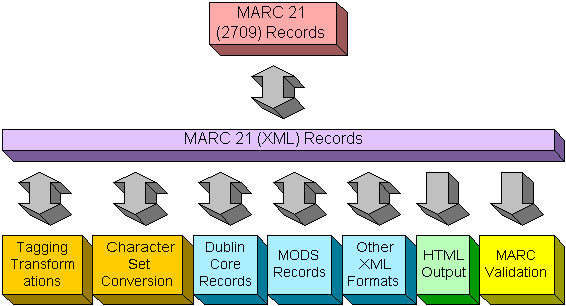

MARC XML Architecture
The Library of Congress' Network Development and MARC Standards Office is developing a framework for working with MARC data in an XML environment. This framework is intended to be flexible and extensible to allow users to work with MARC data in ways specific to their needs. The framework will contain many components such as schemas, stylesheets, and software tools developed and maintained by the Library of Congress.
MARC 21 (2709) to/from MARC 21 (XML) Conversion
- These tools convert MARC data between MARC (2709) and MARC (XML) structures. The conversion is lossless.
MARC XML Bus
- The core piece of the MARC XML framework is the simple and flexible MARC XML schema that can carry MARC data and provides a common format for writing MARC XML Consumers
MARC XML Consumers
-
MARC XML records may be used in "native" MARC XML form. Otherwise,
the consumers of MARC XML records tend to fall into three categories:
transformation, presentation, and analysis.
- Transformation is the conversion between MARC XML and other metadata formats.
- Presentation is the display and/or mark up of MARC data into some readable form.
- Analysis is the processing of MARC data to produce analytical output such as validation.
| The Library
of Congress >> Standards >> MARC >> MARCXML December 30, 2004 |
Contact Us |